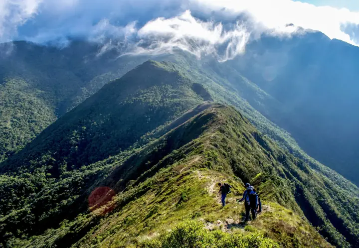
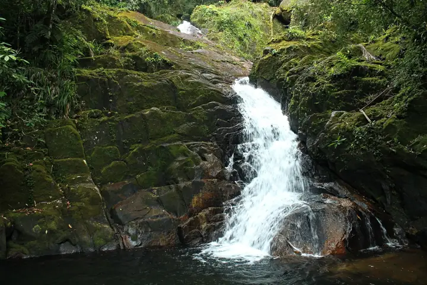
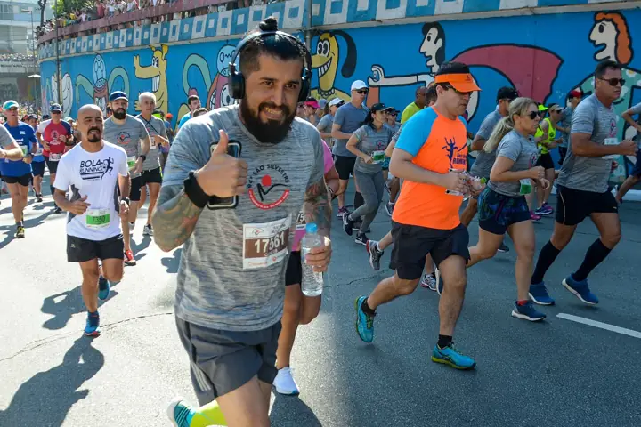

Mais de 120 trilhas e percursos
Sua próxima aventura começa aqui
Descubra trilhas e percursos de corrida perto de você e marque saídas em grupo.
Perto de você
São Carlos e região

Trilha 4,6Trilha da Cachoeira Escondida
ModeradaBrotas, SP · a 38 km
- Distância
- 6,2 km
- Subida
- 320 m
- Tempo
- 2h30
Corrida
4,8
Circuito da Lagoa
FácilSão Carlos, SP · a 3 km
- Distância
- 5,0 km
- Subida
- 20 m
- Tempo
- 30 min
 Trilha
4,9
Trilha
4,9
Pico do Gavião
DifícilSão Bento do Sapucaí, SP · a 210 km
- Distância
- 9,8 km
- Subida
- 780 m
- Tempo
- 5h
 Trilha
4,7
Trilha
4,7
Caminho do Mirante
FácilAnalândia, SP · a 52 km
- Distância
- 3,4 km
- Subida
- 110 m
- Tempo
- 1h15

Corrida 4,5Volta do Campus
ModeradaSão Carlos, SP · a 5 km
- Distância
- 7,5 km
- Subida
- 60 m
- Tempo
- 45 min
 Trilha
4,8
Trilha
4,8
Serra das Araras
DifícilItirapina, SP · a 30 km
- Distância
- 12 km
- Subida
- 640 m
- Tempo
- 4h30
Saídas em grupo
Não vá sozinho. 14 saídas marcadas nesta semana.
Encontre gente no seu ritmo e combine carona, horário e ponto de encontro.